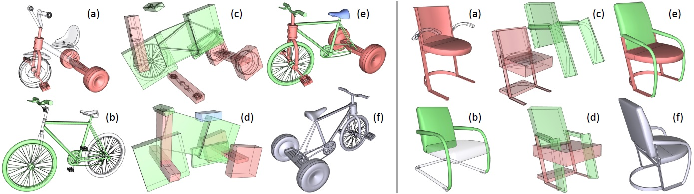
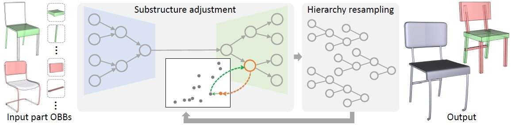
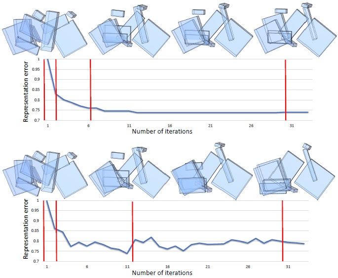
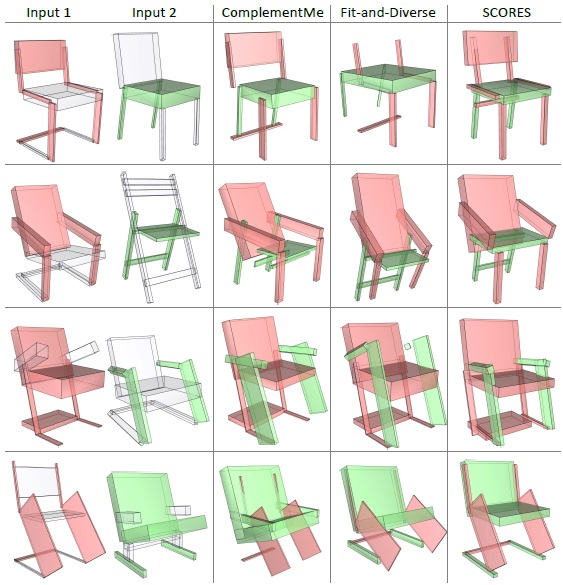
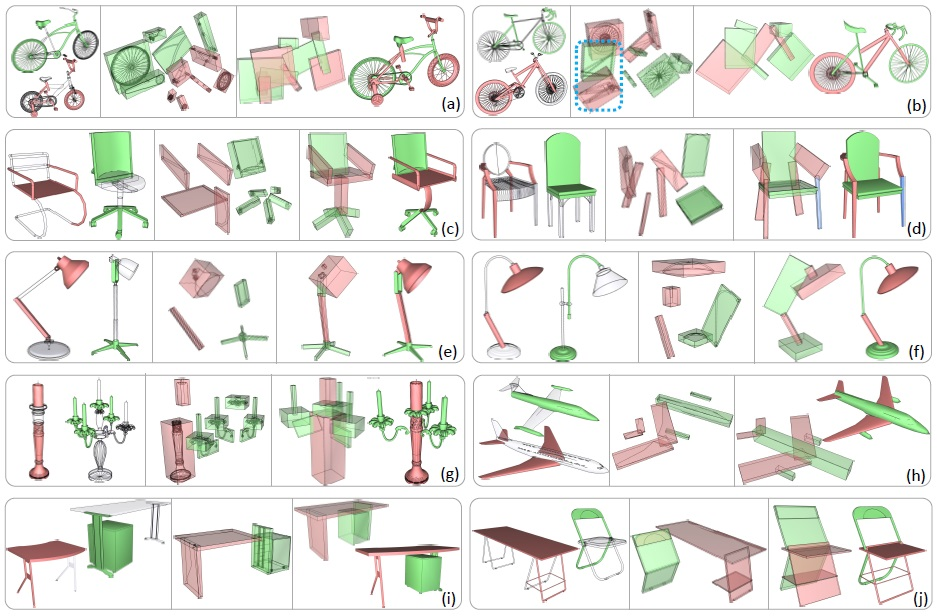

SCORES: Shape Composition with Recursive Substructure Priors
Chenyang Zhu1,2, Kai Xu2,3,
Siddhartha Chaudhuri4,5, Renjiao Yi1,2, Hao Zhang1
1Simon Fraser University, 2National University of Defense Technology,
3Princeton University,
4Adobe Research,
5IIT Bombay
(Kai Xu is the corresponding author.)
ACM Transactions
on Graphics (SIGGRAPH Asia 2018), 37(6)

We introduce SCORES, a neural network which learns structure fusion for 3D shape composition. SCORES takes box abstractions of two sets of parts
(red and green) from two source shapes (a-b), and a rough initial placement of the boxes (c), and outputs an optimized box structure (d), leading to quality
geometry construction; see (e)-(f) for two views. A unique feature of SCORES is that it is not merely learning how to connect parts; the goal is to produce a
plausible and coherent final shape structure, which may necessitate adding new parts (blue bicycle seat) or removing duplicates (red chair back). To handle
creatively composed shapes, SCORES learns a plausibility prior over substructures at various levels of abstraction, rather than complete shapes alone.
|
Abstract
|
We introduce SCORES, a recursive neural network for shape composition. Our
network takes as input sets of parts from two or more source 3D shapes and
a rough initial placement of the parts. It outputs an optimized part structure
for the composed shape, leading to high-quality geometry construction. A
unique feature of our composition network is that it is not merely learning
how to connect parts. Our goal is to produce a coherent and plausible 3D
shape, despite large incompatibilities among the input parts. The network
may significantly alter the geometry and structure of the input parts and
synthesize a novel shape structure based on the inputs, while adding or
removing parts to minimize a structure plausibility loss. We design SCORES
as a recursive autoencoder network. During encoding, the input parts are
recursively grouped to generate a root code. During synthesis, the root code
is decoded, recursively, to produce a new, coherent part assembly. Assembled
shape structures may be novel, with little global resemblance to training
exemplars, yet have plausible substructures. SCORES therefore learns a
hierarchical substructure shape prior based on per-node losses. It is trained
on structured shapes from ShapeNet, and is applied iteratively to reduce the
plausibility loss.We showresults of shape composition from multiple sources
over different categories of man-made shapes and compare with state-of-theart
alternatives, demonstrating that our network can significantly expand
the range of composable shapes for assembly-based modeling.
|
|
|
Paper |
|
|
|
Slides |
|
|
|
| Images |

Overview of our SCORES shape composition pipeline, iterating over three key stages: (a) substructure embedding via bottom-up structure encoding
(blue arrows), (b) substructure adjustment through top-down code adjustment (green arrows) and structure decoding (orange arrows), and (c) hierarchy
resampling. The input consists of a group of parts, along with their OBBs, from two source shapes. Note that neither semantic nor relational information
about the input parts is required throughout the pipeline; only that the source shapes are segmented.

Change of representation error with iterative part adjustment, with
(top row) and without (bottom row) hierarchy resampling. Given a randomly
perturbed part configuration of a bicycle model, we show the results of
adjustment at various iteration steps (marked with red vertical lines). Our
method converges better with hierarchy resampling.

Visual comparison of shape composition results with ComplementMe
[Sung et al. 2017] and Fit-and-Diverse [Xu et al. 2012].

Visual examples of challenging compositions achieved by SCORES over six object categories. In each block, the leftmost box shows parts selected
from two source shapes for merging (red and green). The middle box shows the OBB inputs to the algorithm – an initial hierarchy is computed for each group
of parts separately (as a subgraph of the inferred source hierarchy) and they are then linked by a common parent. The rightmost box shows the final merged
result (OBB and fine-grained geometry). Redundant parts in the sources are circled with blue dots (b). New parts synthesized to better fit the shape prior are
colored in blue (d). In (j), we show cross-category part merging between Chair and Table. Substructure adjustment was conducted based on the substructure
model (discrete latent space) learned for chairs, thus yielding a chair-like final shape.
|
|
|
| Thanks |
We thank the anonymous reviewers for their valuable comments.
This work was supported in part by NSFC (61572507, 61532003,
61622212) for Kai Xu, NSERC (611370) and a gift grant from Adobe
Research for Hao Zhang.
|
|
|
Code
Data |
The source code and dataset will be released soon.
|
|
|
| Bibtex |
@article
{zhu_siga18,
title = {SCORES: Shape Composition with Recursive Substructure Priors},
author
= {Chenyang Zhu and Kai Xu and Siddhartha Chaudhuri and Renjiao Yi and Hao Zhang},
journal
= {ACM Transactions on Graphics (SIGGRAPH Asia 2018)},
volume
= {37},
number
= {6},
pages
= {to appear},
year
= {2018}
}
|
 
 
|